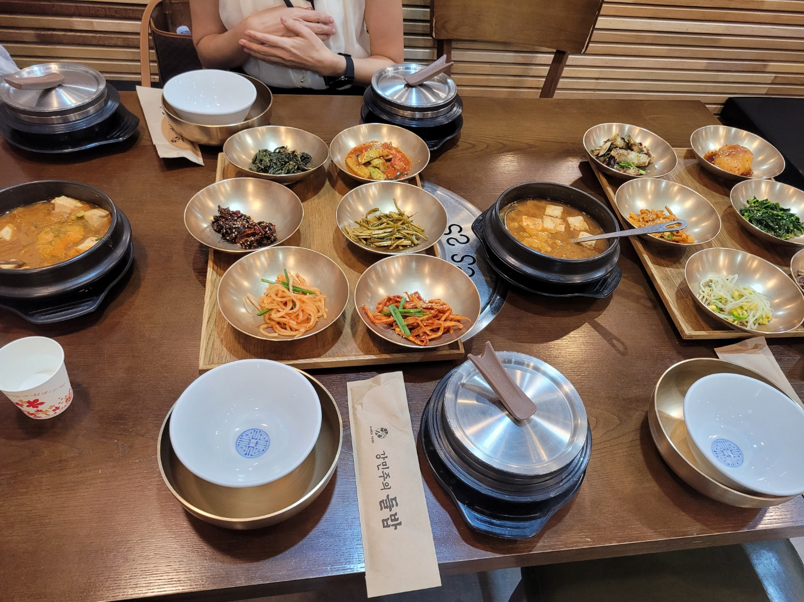

놋그릇 한상차림이천 쌀밥 · 한식
01강민주의 들밥
갓 지은 쌀밥과 여러 가지 제철 반찬을 놋그릇 한 상으로 즐기는 1코스의 중심 식사 장소입니다. 식사 뒤 바로 이진상회로 이동하기 좋아 동선을 단순하게 만들 수 있습니다.
- 현장 확인 가격
1인 17,000원 · 가격은 방문 전 재확인 - 대표 경험
쌀밥과 나물 반찬 한상, 반찬 리필대 - 권장 체류
약 60~90분 · 주말에는 대기시간 고려 - 코스 접근
신둔도예촌역에서 택시 약 10분·5.7km 기준
현장 팁
점심 피크보다 조금 일찍 도착하면 식사 뒤 이진상회에서 쉬는 시간을 넉넉하게 확보할 수 있습니다.
점심 피크보다 조금 일찍 도착하면 식사 뒤 이진상회에서 쉬는 시간을 넉넉하게 확보할 수 있습니다.